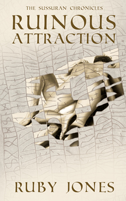
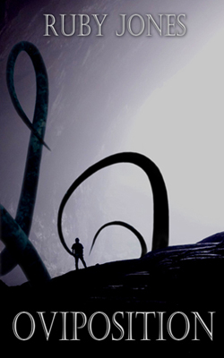

The Sussuran Chronicles
Beneath Mount Sussuran, the ancient subterreanean ruins of the Elders conceal the secrets of a lost civilisation, and its dead gods. What happened to the Elders and to the Old Ones they worshipped is just one of the mysteries Hale's group of intrepid archaeologists aim to solve as they venture into the darkness ot the caves.

Ruinous Attraction
The Elder ruins beneath Mount Sussuran thrum with magic and mystery - an irresistible draw for Arthur, a scholar and wizard in hiding
For Ferdinand, the ruins offer a connection to the ancestors who bound the souls of dead gods to the blood of his people. A power that feels like a curse: an ever-present temptation to unscrupulous wizards.
Drawn together by Hale’s archaeological expedition, Arthur and Ferdinand make for uncomfortable companions.
When Ferdinand accidentally locks himself and Arthur in an ancient enchanted sex dungeon, will they be able to resist their growing desires? Or could passion break down the walls of prejudice and distrust?
Content note: as Ferdinand and Arthur are under an enchantment, this story could be considered dub-con, however, consent is discussed and considered very carefully by both characters.
At the moment you can only buy an edition with the uncensored cover art from Amazon.

Oviposition
When Hale wanders carelessly far from camp, he finds an erotic surprise waiting for him in the dark of a cave.
Mirta had warned him about the caves under Mount Sussuran, where the secrets of the Old Ones lie in wait. What Hale didn't know was that those secrets came with inquisitive tentacles, sensuous excretions, and a questing interest for somewhere warm to lay their eggs.
This short story is perfect for those in search of tantalising tentacles, egg-laying monsters, or an alternative take on mpreg.
Content note: this story contains non-consensual sex and was too spicy for Amazon!